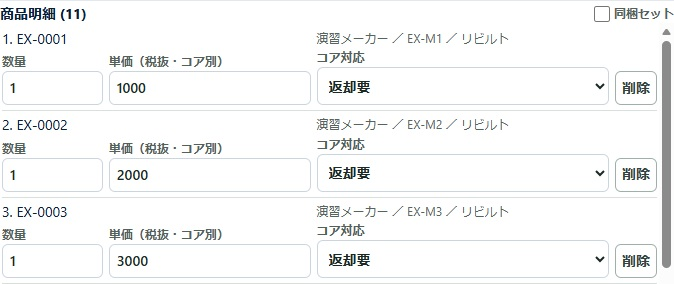
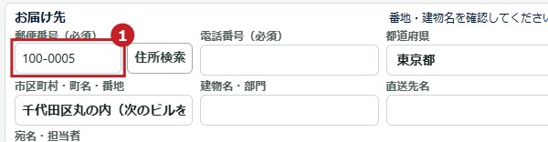

全体の流れ
- 1. FAX確認フロント
- 2. 受注登録フロント
- 3. 帳票発行フロント・出荷担当
- 4. 出荷確定出荷担当
- 5. CSV出力売上担当
- 6. 取込・確認売上担当
- 受付済み
- 通常受注を登録し、必要な数量を引き当てた段階。
- 出荷処理中
- 出荷指示を発行し、送り状やピッキングの準備・照合を進める段階。
- 出荷済み
- 出荷を確定した段階。売上CSVの出力対象になります。
- 売上未処理
- 売上CSVは出力済みで、販売管理登録の確認待ち。
- 売上登録済み
- 販売王での登録結果をD-CATSに記録した段階。工程は「5 完了」。
フロント
1. 受信したFAXを確認する
- 発注元の得意先名・コード、FAXの注文番号または参照番号、注文内容を確認します。再送や訂正の表示があれば、先に受注一覧で登録済みの注文を確認します。
- 品番・数量・合意単価、納品先・連絡先、希望納期、配送指定を読み取ります。発注元と直送先が異なる場合は、それぞれを書き分けます。
- 品番から商品を特定できない場合は、発注元へ確認します。車検証の情報が必要な場合は、型式等から該当品を検索・照合します。
フローを試すとき 準備担当は確認票で試験先を確認し、演習用FAX注文書を開きます。発注元・請求先は開発テスト得意先（DEV-ORDER-001）に固定します。新規印刷では架空の直送先と在庫商品を組み合わせ、通常受注の見積額を使います。直送先名・宛名と住所・建物名は注文書の各欄から受注入力の同名欄へ個別に転記します。注文書の品番は純正品番を優先して表示します。受注入力では商品区分と候補の品番を両方照合してください。同じ注文書の［確認票を別に開く］から対応する票を印刷します。確認票には印字・販売王取込の期待結果と観察記録欄があります。
次へ進む目安 どの得意先に何を請求し、どこへ何点送るかを確認できている。
フロント
2. D-CATSで通常受注を登録する
- 受注・出荷管理［受注入力］を開く
- 受注区分［通常受注］を選ぶ
- 登録内容を確認明細・配送・合計を照合
- 得意先
- 名称または得意先コードを入力し、候補から発注元を選びます。似た社名はコードも照合します。
- 商品追加・商品明細
- 純正品番やメーカー品番で検索し、該当する商品・区分を選び、数量を入力します。追加した商品は上から順に並びます。明細欄を下にスクロールすると続きの行を編集できます。各行の数量と単価を確認し、合意単価への修正が必要な場合は入力できる社内欄を使います。
- お届け先
- 郵便番号で住所検索し、電話番号、住所・番地・建物、直送先名・宛名の順に入力します。直送は実際の届け先を入力します。
- 配送・メモ
- 上から運送便、お届け希望日、時間帯の順に確認します。運送便と宛先から最短着日が入ります。別の日を希望する場合は選択可能な範囲で変更します。該当時はコア返却時の運送便も確認し、参照番号や指示は用途に合う欄に記録します。
- カルテ番号・車両情報
- カルテNo.は配送・メモ欄、車名・型式・初年度登録・車台番号は［車両情報］に入力します。演習票の3項目目に転記用の値があります。
- 同梱セット
- 同じ発注者・直送先の計2点以上を1箱で発送するとき、同じ受注に明細を入れて指定します。確認画面の「同梱セット 2点 ／ 発送用送り状1枚」などで、点数と枚数を確認します。


コア条件は商品明細ごとに確認
- 返却要
- コアを返送してもらいます。コア代金の請求・返金はありません。
- 返却不要・請求なし
- この明細では返却も請求も行いません。請求する場合は下の2種類を選び、マスター金額がないときは1個当たりの税抜コア代金を入力します。
- 請求・返却後返金
- コア代金を請求し、対象コアの返却を確認した後に返金します。
- 請求・返却不要
- コア代金を請求します。該当する商品の返却用送り状や返金は不要です。
入力と表示金額を確認して［登録内容を確認］を押し、確認ダイアログで得意先・合計・対象時のコア代金や同梱をもう一度照合します。登録後に受注番号・「受付済み」・明細を確認します。
登録応答が取得できないときは、受注一覧で同じ注文の有無を確認します。結果を確認してから次の操作を判断します。
フロント・出荷担当
3. 出荷帳票と送り状を準備する
- 「受注・出荷管理」で受注番号を照合し、対象受注の［出荷帳票発行］を開きます。発行済みの帳票を確認し、必要なものを準備します。
- 箱の登録・確認は［設定］→［箱マスタ］、このPCの印刷先は［設定］→［帳票・プリンター設定］から開きます。複写伝票の寸法を合わせるときは、［設定］→［印刷位置調整］で使用用途と運送会社を選び、［用紙］に実寸を入力します。佐川急便の着払いで実寸が幅190 mm・高さ101 mmのときは、それぞれ190と101を入力します。印字枠は用紙に比例して移動・伸縮します。位置を調整するには、プレビューの文字枠を押したまま移動します。枠が重なるときは左の［印字項目］で対象を選んでからドラッグします。枠をクリックした後は矢印キーで0.5 mm、Shiftキーと矢印キーで1 mmずつ動かせます。位置を確認し、［変更を保存］を押します。
- ピッキング前に受注を修正した場合は、そのまま［印刷］で修正後の出荷指示書を用意します。削除した商品は明細とピッキング欄から外れます。コア返却が引き続き必要な場合、保存済みの運送会社と作成方法を引き継ぎます。保証書・コア返却シート・返却用送り状は、商品の保証条件とコア対応に従って用意します。保証書とコア返却シートは対象1台につき片面1枚です。ブラウザーから複数枚を印刷するときは、印刷設定で［両面印刷］をオフにします。初回端末印刷で未印刷の出荷指示書が同時に処理される場合は、発行・印刷結果を確認します。
- 商品発送用の送り状を作成します。［B2 CSV発行］で保存先の案内が開いたら、［フォルダを選ぶ］または［保存を許可］を押します。「D-CATS業務連携／B2／01_D-CATS発行」への保存を許可すると元の発行操作が続きます。キャンセルすると発行前に戻ります。B2を使う場合は下図の流れで発行済みの送り状番号を受注へ反映します。別の運送便や手書き伝票は、設定・伝票に従い商品発送用番号を確認・登録します。
- コア返却が必要な注文は、［返送方法設定］で作成方法を［ドットプリンタ］に変更し、番号が空欄のまま［設定を保存］できます。［印刷（1枚）］を押して対象商品を確認し、セットした用紙の送り状番号（11桁または12桁）を読み取ります。［返送方法設定］と［印刷（1枚）］では、スキャナーが番号の前後に付けた A は自動で取り除き、数字だけを登録します。［登録して1枚印刷］を押すと、その商品の伝票1枚が印刷待ちになります。複数台の注文は、印刷済みの枚数を確認し、次の用紙で繰り返します。手書きの場合も出荷確定前に番号を登録します。
- 対象商品を確認［印刷（1枚）］を開く
- 用紙を1枚セット用紙の送り状番号を読み取る
- ［登録して1枚印刷］印刷済み枚数を確認し、次の用紙へ
- D-CATS保存先を許可
B2用CSVを出力 - ヤマト B2クラウドCSV取込・送り状発行
シート式はA5 - D-CATS発行済みデータを取り込み
商品発送用番号を確認
商品発送用
商品に貼る送り状。届け先と番号を受注に対応させます。
コア返却用
返却対象があるときに使う送り状。返却先と番号を確認します。
出荷担当
4. 商品を照合し、出荷を確定する
- 対象受注から［出荷照合を開く］、または出荷指示書のQR・出荷指示番号で該当の出荷指示を開きます。
- 指示書の品番・数量と現品を取り合わせます。製造シリアルの照合対象品は、実際に梱包する個体を読み取るか番号を入力して照合します。別品や数量不足がある場合は確認してから進みます。
- ピッキング完了、商品発送用の送り状番号、返却対象がある場合の返却用番号を確認します。自動確定が働いた場合は画面で結果を確認し、未確定の場合は画面案内に従って手動で出荷を確定します。
- 「出荷済み」と出荷履歴を確認し、現物の梱包・送り状・必要な同梱帳票を確認して出荷します。結果を売上担当へ引き継ぎます。
次へ進む目安 D-CATSで対象受注が「出荷済み」。出荷確定時に完成品の実在庫が減算されます。
売上担当
5. 販売王用の売上CSVを出力する
- 「受注・出荷管理」→「データ連携」→［売上データ出力］を開きます。
- 出力先を「販売王」にし、出荷日の開始・終了を指定して［対象を検索］を押します。
- 対象の受注番号・件数・合計金額を照合し、対象行を選択します。「情報不足」が表示された場合は理由を確認し、得意先設定や商品台帳などの該当項目を担当者に確認します。
- 初回は［保存先を設定］で保存先を設定します。［売上データをCSV出力］を押し、「D-CATS業務連携／販売王／01_D-CATS発行」の保存結果と出力履歴のファイル名・バッチを確認します。
B2用CSV
発送用送り状を発行するためのファイル。取込先はB2クラウド。
売上CSV
出荷済み受注を売上伝票にするファイル。取込先は販売王。
次へ進む目安 保存されたファイルと対象受注を照合でき、D-CATSでは「売上未処理」。
売上担当
6. 販売王へ取り込み、D-CATSで完了を確認する
- 販売王25［ツール］→［テキストデータ入力］
- 取込結果を照合対象の売上伝票を確認
- D-CATS出力履歴 →［販売管理登録を確認］
- 通常の業務手順に従い、販売王の対象会社を確認します。［ツール］→［テキストデータ入力］で、入力形式名称を「売上伝票（消費税特例対応形式）」にします。
- D-CATSの出力履歴と照合したファイルを指定します。CSVは見出しなしなので、［1行目はタイトル行なので無視する］は選択を外し、1行目から取り込みます。
- 取込結果を確認し、販売王の売上伝票で対象伝票・件数・得意先・日付・明細・金額を出力対象と照合します。エラーや一部だけ取り込まれた可能性があれば、先に販売王で登録済み分を確認します。
- 正常に登録できたバッチについて、D-CATSの［売上データ出力］の出力履歴から［販売管理登録を確認］を押します。再表示後に受注の業務状況「売上登録済み」と工程「5 完了」を確認します。
困ったとき
- 品番・数量・届け先が曖昧
- FAXの該当箇所を発注元に確認してから受注を確定します。
- 送り状を作ったのに出荷できない
- 受注番号、ピッキング照合、商品発送用番号、該当時の返却用番号を順に確認します。B2の場合は発行済みデータが対象受注に反映されたことを確認します。
- 注文の訂正・取消が来た
- 内容の訂正は受注を修正します。注文全体を取り消す場合は、ピッキング前なら通常取消の手順へ進みます。シリアル割当が始まった後は、現物・番号・保管状況を確認し、権限のある担当者が専用の取消手順へ進みます。出荷・販売王登録後は関係担当者と出荷・売上の状態を照合して処理を決めます。
- 売上CSVの一覧に出ない
- 出荷済みか、出荷日が範囲内か、出力済みでないか、情報不足がないかを確認します。出力済みのファイルは該当バッチの「同じCSVを再取得」を使います。
- 販売王で形式・文字化けのエラー
- 指定の入力形式と先頭行の設定を確認します。履歴から同じCSVを再取得し、D-CATSが保存したCSVをそのまま使います。原因は販売王のError.logとD-CATSの「売上CSV エラー対処」で確認します。
- 商品コード・請求のエラー
- 商品台帳、得意先コード、請求得意先・締め設定など、Error.logで指摘された箇所を担当者に確認します。
- 取込結果が不明・一部成功
- 販売王で既存伝票とエラー内容を先に照合します。出力バッチ・ファイル名・対象受注番号を控え、登録状況を確定してから残りの処理を判断します。
出荷・売上登録後の業務
納品書・請求書と入金
販売王側で書類を発行し、基本は納品書・請求書をFAXまたはメールで送付します。送付時期と入金処理は得意先の条件と社内手順に従います。
コア返却・返金
返却対象は、現場で返却品を元の発送商品と照合し、コア返却管理に記録します。実際に徴収した返金対象のコア代金は、経理が返金した時点で完了を記録します。